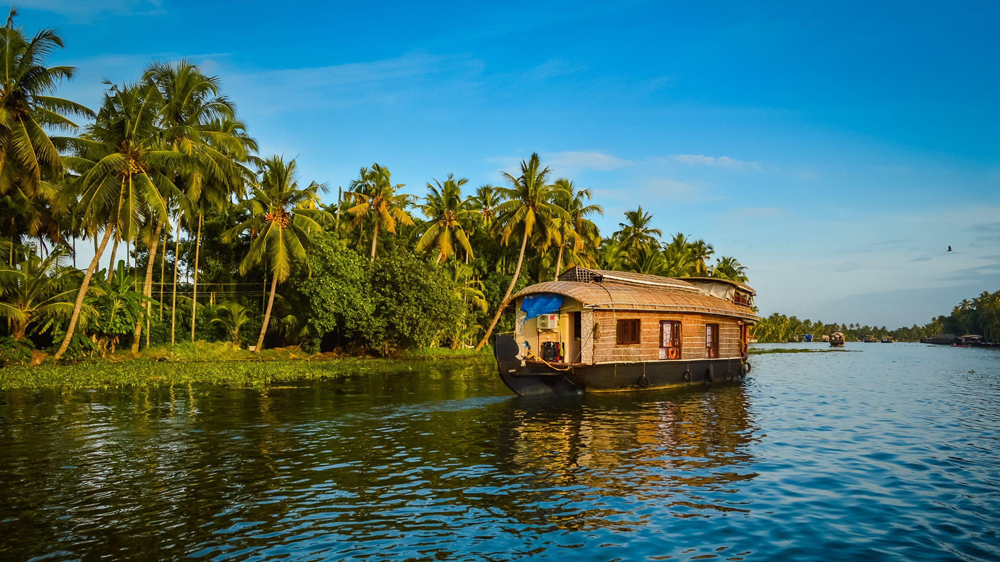
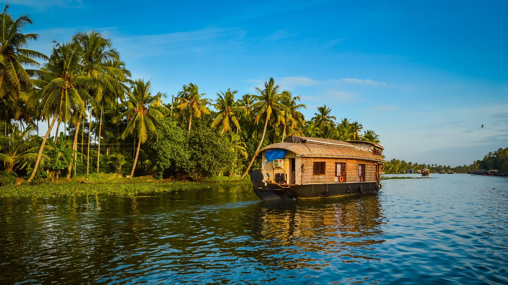

KERALA
 


About Kerala
Kerala, a state on India's tropical Malabar Coast, has nearly 600km of Arabian Sea shoreline. It's known for its palm-lined beaches and backwaters, a network of canals.
Travel Tips for Kerala
- Best time to visit: September to May (High season)
- Don’t miss the backwaters of Alleppey.
- Explore the Tea gradens of Munnar.